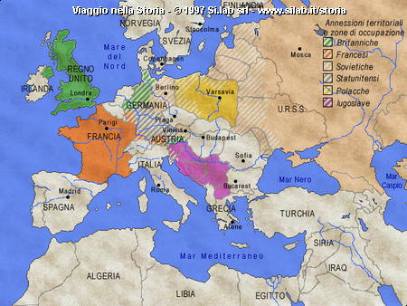
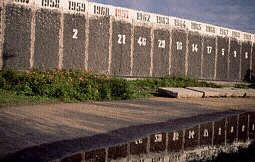

1941
14 agosto: Churchill (Gran Bretagna) e Roosevelt (USA) firmano la Carta atlantica che riconosce il principio dell’autodeterminazione dei popoli.
1942
28 novembre-2 dicembre: Conferenza di Teheran con la partecipazione di Churchill, Roosevelt e Stalin (URSS). L’URSS aderisce alla Carta atlantica.
1944
1-22 luglio: Conferenza di Bretton Woods che disegna il sistema finanziario mondiale e stabilisce la supremazia del dollaro.
3 dicembre- 12 gennaio: guerra civile in Grecia.
1945
4-11 febbraio: Conferenza di Yalta con la partecipazione di Roosevelt, Churchill e Stalin. Accordi sulla riorganizzazione del mondo dopo la fine della guerra. Accordi sulla costituzione dell’ONU. Accordo sulle condizioni dell’entrata in guerra dell’URSS contro il Giappone.
12 aprile: morte di Roosevelt. Truman presidente degli USA.
25 giugno: firma della Carta delle Nazioni Unite.
17 luglio-2 agosto: Conferenza di Postdam con la partecipazione di Truman, Churchill ,poi sostituito da Attlee che aveva vinto le elezioni, e Stalin. Accordi sull’assetto della Germania e della Polonia.
6 agosto: bombe atomiche americane su Hiroshima e Nagasaki.

L'Europa subito dopo la seconda guerra mondiale
1946
5 marzo: discorso antisovietico di Churchill a Fulton (una cortina di ferro).
1947
11 marzo: dottrina di Truman sul "contenimento" (containment)del comunismo.
5 giugno: Piano Marshall, aiuti economici all’Europa.
22-27 settembre: nasce il Cominform (Ufficio di informazione dei partiti comunisti europei), sciolto nel 1956.
1948
1° gennaio: entrata in vigore della Costituzione italiana.
25 febbraio: colpo di stato comunista a Praga.
20 giugno: blocco di Berlino da parte dei sovietici (fino al 12 maggio 1949).
10 dicembre: Dichiarazione Universale dei Diritti Umani.
1949
25 gennaio: nasce il Comecon (unione economica dei paesi dell’est).
4 aprile: nasce la NATO (Organizzazione del patto del Nord Atlantico).
1949: nascono la Repubblica Federale Tedesca (RFT) e la Repubblica Democratica Tedesca (RDT).
settembre: prima bomba atomica sovietica.
1° ottobre: nasce la Repubblica Popolare Cinese.
1950
25 giugno. inizia la guerra di Corea (finirà il 27 luglio 1953).
1951
18 aprile: Trattato di Parigi che istituisce la CECA (Comunità europea del carbone e dell’acciaio).
1952
1° novembre: prima bomba H americana.
1953
5 marzo: morte di Stalin.
12 agosto: prima bomba H sovietica.
3 settembre: Kruscev primo segretario dell’URSS (fino al 1964).
Eisenhauer presidente degli USA.
1955
17-24 aprile: Conferenza di Bandung: nasce il movimento dei Non Allineati.
14 maggio: Patto di Varsavia (Alleanza dei paesi comunisti europei sotto la direzione dell’URSS).
1956
febbraio: XX Congresso del PCUS (partito comunista sovietico): denuncia dei crimini di Stalin.
giugno: rivolta polacca di Poznam.
23 ottobre-13 novembre: insurrezione di Budapest e intervento sovietico in Ungheria.
29 ottobre-6 novembre: guerra israelo-egiziana.
5 novembre-22 dicembre: crisi di Suez.
1957
25 marzo: Trattati di Roma che istituiscono la Comunità europea (CEE) e l’EURATOM (Comunità europea dell’energia atomica). Europa dei Sei.
ottobre: i sovietici mettono in orbita il primo satellite spaziale.
1958
4 novembre: Kruscev chiede la smilitarizzazione di Berlino.
1960
novembre: conferenza interanzionale dei partiti comunisti. Contrasti tra URSS e Cina.
1961
12 aprile: il sovietico Yuri Gagarin primo uomo nello spazio.
12 agosto-20 novembre: costruzione del Muro di Berlino.
ottobre: l’Albania rompe con l’URSS, dichiarandosi fedele a Stalin.
Elezione di Kennedy presidente degli USA.
Fallimento dello sbarco di truppe statunitensi a Cuba (Baia dei Porci).
1962
18 ottobre-20 novembre: crisi dei missili a Cuba.
Consiglieri USA in Vietnam.
1963
22 novembre: uccisione del presidente Kennedy a Dallas. Gli succede Johnson.
1964
ottobre: destituzione di Kruscev. Gli succede Breznev.
Johnson fa votare la "legge contro la povertà" e la legge per i diritti civili per i neri.
Rivolte nei ghetti neri d Harlem, Los Angeles, Detroit, ecc.
1965
Assassinio di Malcom X, leader dei Black Muslims.
1967
guerra egizio--israeliana (guerra dei sei giorni). Gli israeliani occupano la penisola del Sinai, la striscia di Gaza, la Cisgiordania e le alture del Golan.
1968
"Primavera di Praga".
20 agosto.: le forze del Patto di Varsavia intervengono in Cecoslovacchia.
aprile: assassinio di Martin Luther King.
1969
Nixon presidente degli USA.
Gli americani sbarcano sulla Luna.
1971
Non convertibilità del dollaro in oro. Svalutazione del dollaro.
Ripresa dei bombardamenti in Vietnam.
1972
22 maggio: visita del presidente statunitense Nixon a Mosca; accordo sul congelamento degli arsenali strategici.
Visita di Nixon in Cina.
Accordo Salt I.
1973
27 gennaio: accordi di Parigi sul cessate il fuoco in Vietnam.
Scandalo Water Gate che coinvolge il presidente Nixon.
settembre: colpo di stato in Cile contro il governo delle sinistre di Unità popolare. Morte del presidente Salvador Allende.
6 ottobre: guerra egizio-israeliana (guerra del Kippur). Blocco da parte dei paesi arabi delle forniture di petrolio ai paesi occidentali filoisraeliani.
1974
Dimissioni di Nixon. Gli succede Ford.
1975
Inizi della recessione economica in USA.
Elezione di Carter a presidente USA.
1978
settembre: accordi di Camp David tra Israele ed Egitto: riconoscimento da parte degli egiziani dello Stato di Israele e restituzione da parte di Israele del Sinai.
1979
Accordo Salt II.
Caduta della Scià di Persia e rivoluzione islamica guidata da Khomeini in Iran.
Affare degli ostaggi americani in Iran.
27 dicembre: le truppe sovietiche invadono l’Afghanistan.
1980
4 maggio:Morte di Tito.
14 agosto: sciopero nei cantieri di Danzica in Polonia. Diffusione del sindacato Solidarnosc.
1981
Elezione a presidente Usa di Reagan.
18 ottobre: il generale Jaruzelski, nominato segretario del partito comunista polacco proclama lo stato d’assedio.
1984
18 aprile: morte del leader albanese Hoxha.
1985
12 marzo: Gorbacev viene nominato primo segretario del partito comunista sovietico.
Secondo mandato di Reagan.
1986
Scoppia in USA lo scandalo "Irangate" che coinvolge esponenti del governo.
In URSS Gorbaciov lancia la perestrojka e la glasnost.
1987
dicembre: incontro a Washington tra Gorbaciov e Reagan per firmare il trattato per la riduzione degli armamenti.
1988
Bush presidente degli USA.
1989
crollo del comunismo nei paesi europei dell’est.
caduta del muro di Berlino.
Monumento alle vittime cadute mentre cercavano di superare il muro di Berlino

1990
Riforma costituzionale in URSS.
Occupazione del Kuwait da parte dell’Iraq.
1991
Guerra del Golfo.
Scioglimento del Patto di Varsavia.
Scioglimento dell’URSS e nascita della CSI.
Accordi di Maastricht che disegnano l’unione Europea.
Indiendenza della Slovenia e della Croazia. Inizio della guerra nella exJugoslavia.
Una statua di Lenin viene abbattuta.